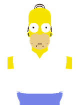

EL PASAJEROA
Ajusta la masa

Cambiar pasajero ↑Homero Simpson1 ASIENTO
Carrito(s) 55 kgMasa total 155 kg
Masas didácticas editables. Compara dos pasajeros sin cambiar la pista.
SECCIÓN 01 · EL RECORRIDO
Dos vueltas verticales, llegada abajo y toda la energía a la vista.
TU BOLETO A LA FÍSICA
Homero Simpson155 kg con carrito
Cinco carritos unidos, un asiento para cada personaje. La altura y la energía se calculan con el centro de masa del tren; los puntos A–G indican el paso del primer carrito.
Arrastra para girar · rueda para acercarte
SECCIÓN 02 · PREPARA LA PRUEBA
Cambiar una variable reinicia la prueba.

Cambiar pasajero ↑Masas didácticas editables. Compara dos pasajeros sin cambiar la pista.
Una salida muy baja puede hacer que el carrito regrese antes de completar la vuelta.
La zona final siempre frena el carrito. Q incluye el rozamiento y los frenos; el CSV permite separarlos.
SECCIÓN 03 · DEL RECORRIDO A LOS DATOS
Primera pasada hacia adelante. Los valores se registran al cruzar cada punto.
| Punto | t s | h m | v m/s | Eₚ J | E꜀ J | Eₘ J | Q J |
|---|
SECCIÓN 04 · EL MODELO FÍSICO
En modo individual, cambiar la masa modifica la energía y conserva la rapidez a igual altura y rozamiento. Con la familia, también cuenta cómo se reparte la masa entre los cinco carros.
El modo individual modela un carrito como partícula sobre un riel fijo con ruedas de sujeción. El modo familiar suma cinco masas, una por carro, separadas 4.6 m y con la misma rapidez sobre el riel. Eₚ = Σmᵢghᵢ y E꜀ = ½Mv²; la altura mostrada es la del centro de masa. El control de altura fija la salida del primer carro; los demás comienzan detrás sobre la rampa. Los frenos actúan cuando el último carro entra en la recta final. Se omite la rotación de los carros y se idealizan sus uniones. g = 9.81 m/s². La altura cero está en la base de las vueltas. El rozamiento se representa por Fᵣ = μ|N| y la energía disipada por Q = ∫(Fᵣ + Ffreno) ds. La llegada está en la base y tiene una zona horizontal de frenado independiente del interruptor de rozamiento. Allí la energía cinética se transforma en energía disipada, incluida en Q. El CSV distingue Q por rozamiento y Q por frenos. Sin rozamiento, Eₘ se conserva hasta comenzar a frenar; durante el frenado se conserva Eₘ + Q. Se omiten aire y energía de rotación de ruedas. El radio de la segunda vuelta es el 85 % del primero; la separación lateral evita que se crucen los rieles. La pequeña variación del balance corresponde al cálculo numérico.
La carga normal indicada es |N|/(mg) del modelo, no una evaluación de seguridad para pasajeros. Esta pista es didáctica y no reproduce La Avalancha del IRTRA.
Prueba primero dos masas con la misma altura y μ = 0. Compara rapidez y energía. Después conserva masa y altura y aumenta μ. Guarda cada prueba con Exportar CSV antes de cambiar los parámetros. El tiempo lento modifica la reproducción, no las leyes físicas.